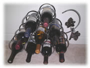
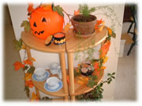

| ..*..*.. 2002年9月20日(金) 晴れ ..*..*.. 外はものすごく暑くて、真夏！という感じなのですが、街は「秋」の雰囲気です。 私は、もともと買い物が好きじゃないのと、片付けるのが好きなので、家の中のものを増やしたくない主義です。それに留学してからは引っ越しが多く、カリフォルニアに来てから４年間で5回も引っ越して、身軽が身に付いていました。が、最近はそういう考えはちょっと変わってきました。 ワインラックは、前々から夫とも「欲しいねぇ」って話していたもの。このぶどうの形がふたりとも気に入って、買ってすぐのときは見るだけで幸せになりました。 2年間習っていたお菓子／パン作りの先生が日本に帰ることになって、そのガレージセールで下の棚を買いました。彼女は、私よりもあとに日本からカリフォルニアに来られてから、次々と、ガレージセールなどで買い物をされてました。 ご主人の転勤だったので、「日本に帰ることになったら、持って返るのたいへんだろうなー」と密かに思っていたのですが、帰ることに決まってからは、手際よく、どんどん売りにだして、今ではほとんど売れてしまったようです。 そういうのを見ていると、「引っ越しが多いからものを買わない」のってただの言い訳なんですよね(^^; 話を戻して、この棚、ずいぶん気に入ってます。玄関の入り口のところにこんな風に置いたんだけど、なかなかいい雰囲気。これから、ここにこうやって季節のものを置けると思うと、楽しみも増えます。 絶対ではないけど、生活に必要なものってあるんですよね。 |